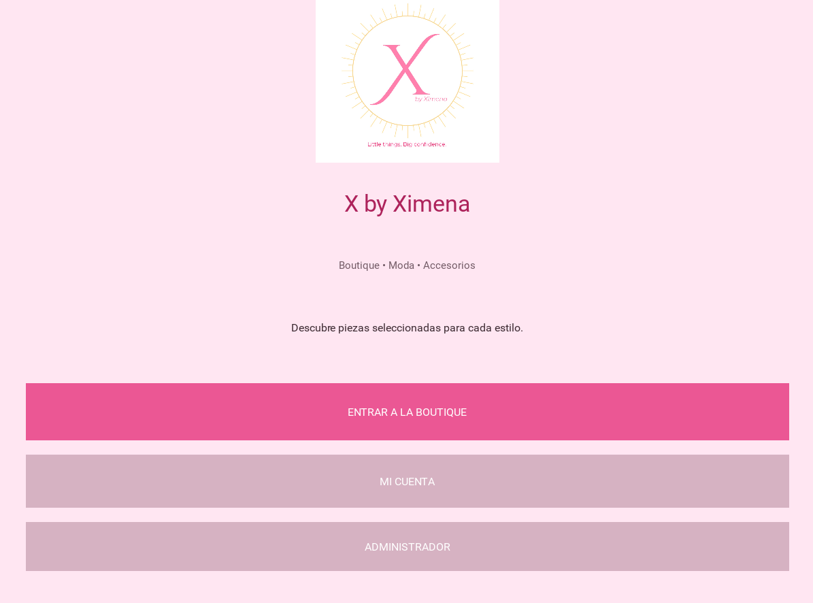
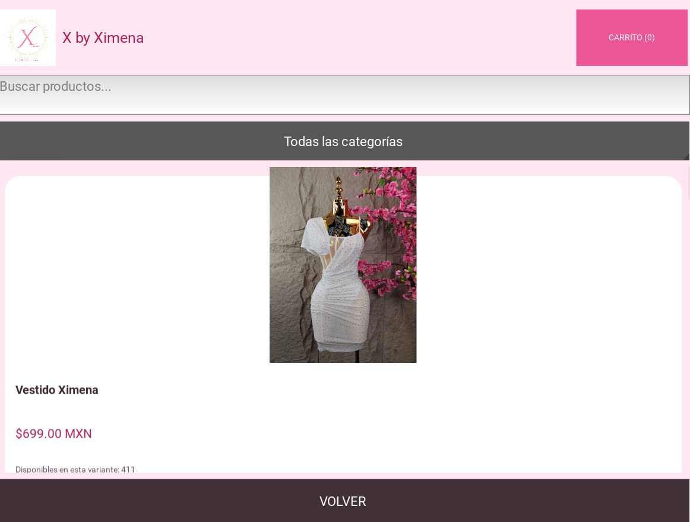
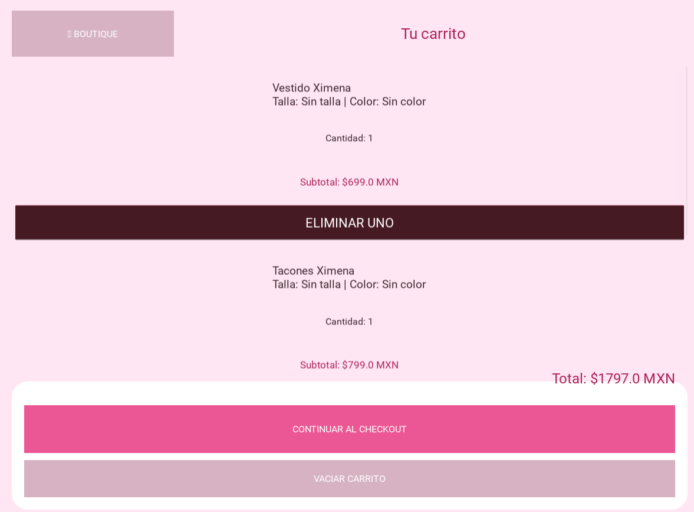
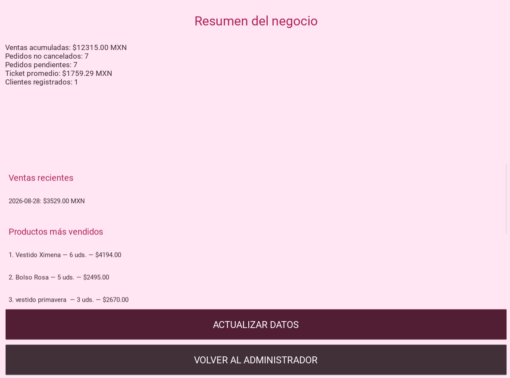

01
DESKTOP SOFTWARE
X by Ximena
Sistema de administración para una boutique. Diseñado para gestionar productos, inventario, clientes, ventas y operaciones desde una computadora con Windows.
SOFTWARE DEVELOPER
Desarrollador enfocado en Python, aplicaciones de escritorio y desarrollo web. Creo herramientas pensadas para negocios, automatización y experiencias digitales.
01 / SOBRE MÍ
Mi enfoque es aprender programación desarrollando proyectos que puedan utilizarse en escenarios reales. Actualmente trabajo con Python, interfaces de escritorio, bases de datos y tecnologías web.
Mi objetivo es crear aplicaciones claras, funcionales y mantenibles, mientras sigo ampliando mis conocimientos hacia desarrollo Full Stack.
02 / PROYECTOS
Software construido para resolver necesidades reales.
Sistema de administración para una boutique. Diseñado para gestionar productos, inventario, clientes, ventas y operaciones desde una computadora con Windows.
Aplicación web de productividad para administrar tareas, prioridades, estados y progreso desde un dashboard interactivo.
Sitio web responsive creado desde cero para presentar proyectos, habilidades y experiencia de desarrollo.
Próximo sistema para administrar ventas, inventario, costos, productos y utilidad de un negocio de alimentos.
Próxima experiencia web para catálogo de productos, carrito y contacto directo por WhatsApp.
CASO DE ESTUDIO / X BY XIMENA
Una boutique necesitaba una herramienta para centralizar productos, clientes, pedidos, inventario y ventas.
Desarrollé X by Ximena, una aplicación de escritorio construida con Python que reúne las principales operaciones del negocio dentro de una sola interfaz.
Catálogo de productos, carrito, cuentas de clientes, favoritos, pedidos, dashboard administrativo, gestión de productos, clientes, cupones y exportación de información.




CASO DE ESTUDIO / TASKFLOW
Organizar múltiples tareas puede volverse complicado cuando no existe una herramienta sencilla para visualizar prioridades, estados y progreso.
Desarrollé TaskFlow, una aplicación web interactiva que permite administrar tareas desde un dashboard y visualizar el avance del trabajo en tiempo real.
Creación, edición y eliminación de tareas, búsqueda, filtros por estado, prioridades, fechas límite, Drag & Drop, estadísticas automáticas, progreso de productividad y modo claro/oscuro.
Las tareas y las preferencias del usuario se almacenan mediante LocalStorage, permitiendo conservar la información después de cerrar o actualizar el navegador.
03 / TECNOLOGÍAS